These are rough mockups, not the final video. Every style uses the same words and the same five topics, so the only thing to judge is the look and feel. The stills show a title and its proof line together. In the real video they come one after the other, so there are never more than 8 words on screen. Reply with A, B or C, or a mix such as "B hook, A chapters".
Big type on black, with the photo in one block of the brand grid. A bar along the bottom shows which of the five topics is on screen.
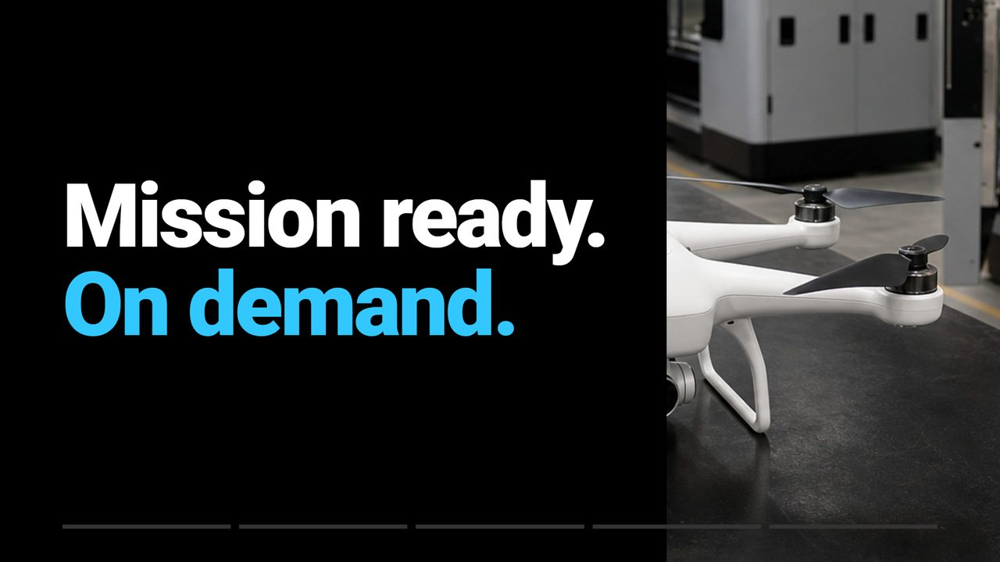
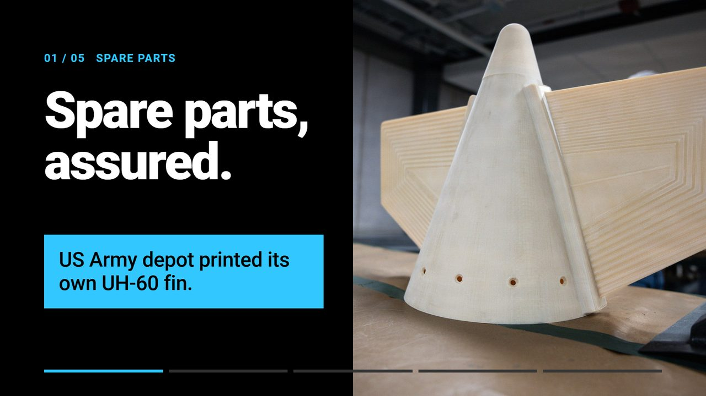
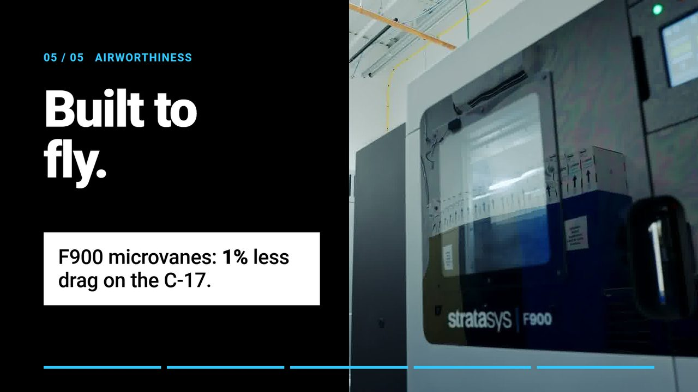
Being read from across a busy room. It is the closest to the brand guide.
Calm, precise, confident.
It is the least cinematic of the three, so it may pull fewer people in from a distance.
Full-screen real footage with titles in the lower left. It opens on the Sierra Space shot of Earth from orbit, then moves to aircraft, drones and printers.
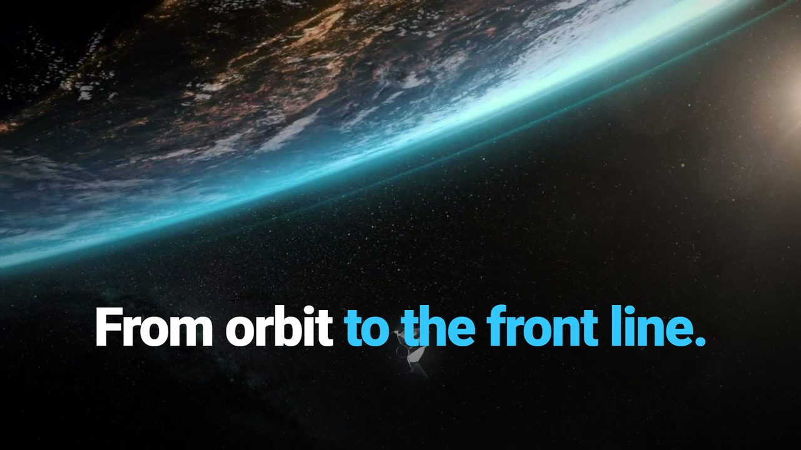
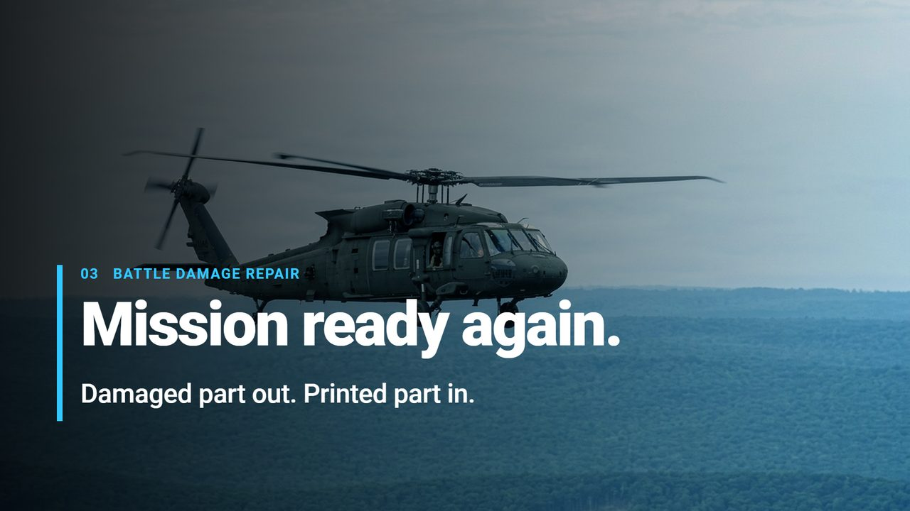
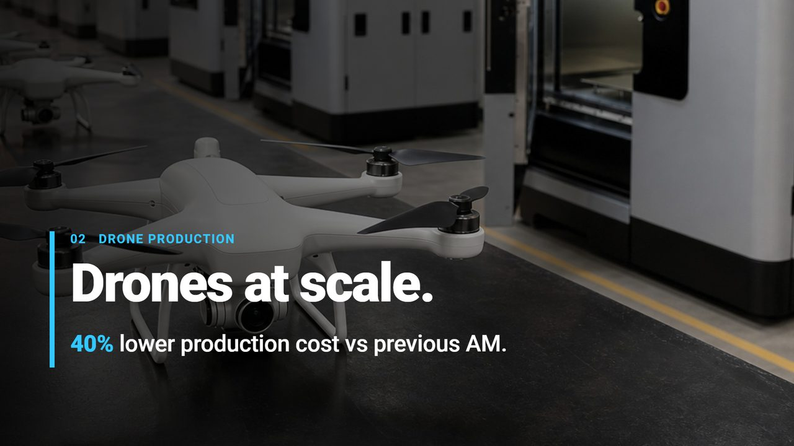
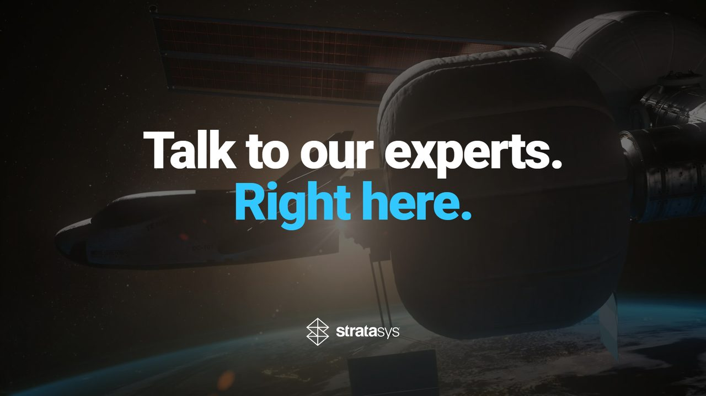
Stopping people. It is the most emotional and the most "big screen" of the three.
Epic and cinematic.
Space is not a summit topic. Reusing Sierra Space footage may need their OK. Text over moving footage is harder to read.
Each topic starts as a blue digital drawing, then the real part prints into place. The video itself makes the point of the summit's digital inventory topic.
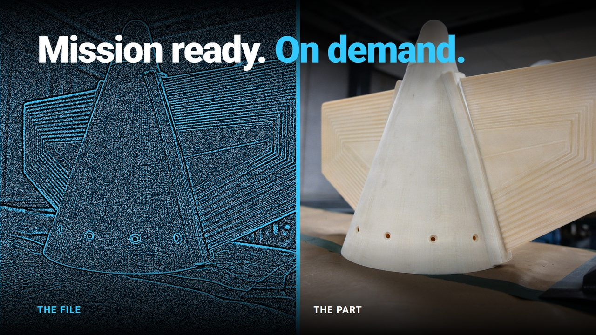
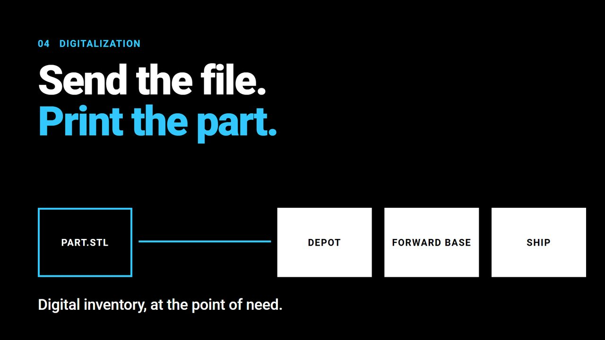
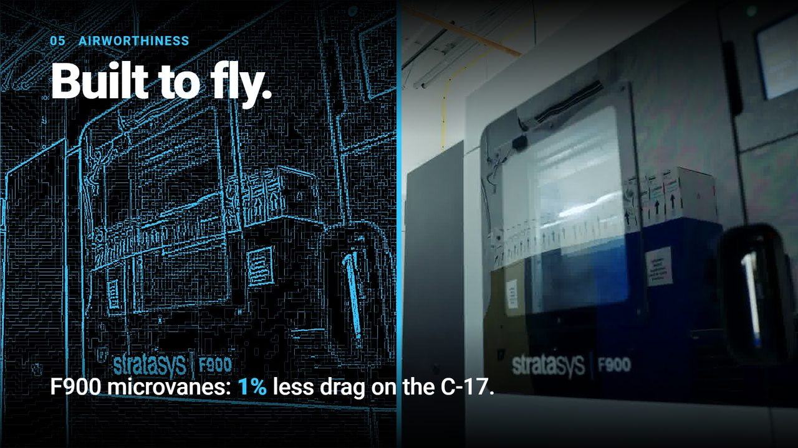
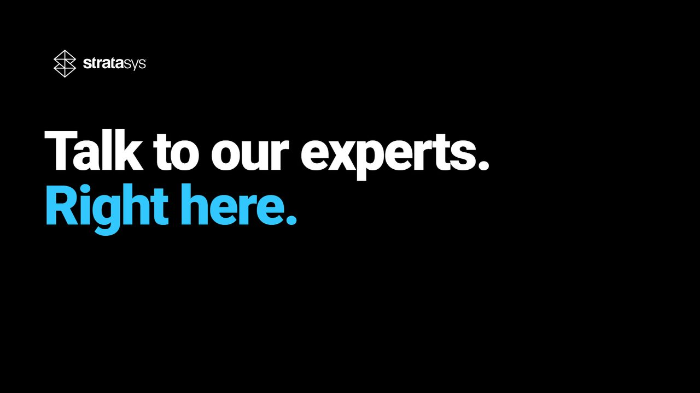
Showing what Stratasys does, file in and part out, without a presenter.
Technical and modern.
The blue drawing effect sits on product photos, so the brand team has to OK it first. It also takes the most production time.
| Part | Title card | Proof line | Source |
|---|---|---|---|
| Hook | Mission ready. On demand. | None | Brief |
| 01 Spare parts | Spare parts, assured. | US Army depot printed its own UH-60 fin. | Corpus Christi Army Depot use case |
| 02 Drone production | Drones at scale. | 40% lower production cost vs previous AM. | Bifrost (SAF), approved proof |
| 03 Battle damage repair | Mission ready again. | Damaged part out. Printed part in. | No case study yet |
| 04 Digitalization | Send the file. Print the part. | Digital inventory, at the point of need. | No case study yet |
| 05 Airworthiness | Built to fly. | F900 microvanes: 1% less drag on the C-17. | USAF C-17 microvanes use case |
| Close | Talk to our experts. Right here. | Stratasys logo, then loops to the hook | Brief |